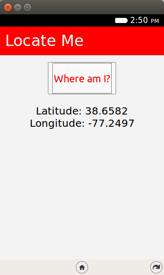
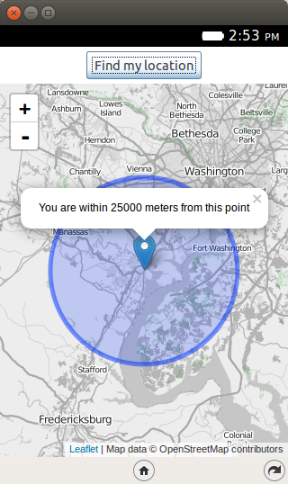
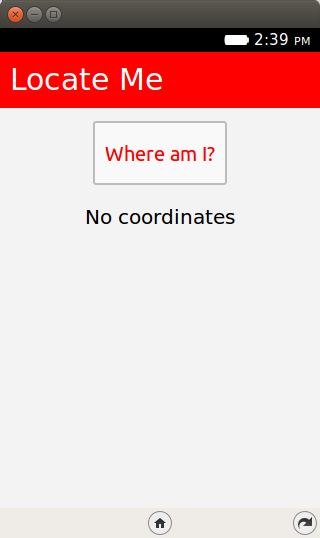
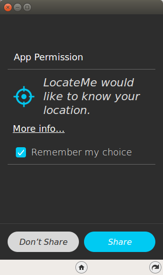

Welcome to Episode 5 of the Firefox OS App Development Tutorial. This episode will take you through the steps for writing Firefox OS Apps that are location aware. What this means is that your application can interact with the GPS receiver that is present on the Firefox OS Device, retrieve the current position (latitude, longitude) and thereby help you write location based applications.
Let’s check out the application in action first. This will help you understand what we shall be achieving by the end of this tutorial.
What we shall write is two mobile applications that will retrieve our current position. On successfully getting the current position from the GPS receiver on the Firefox OS phone, the first app will simply display the current longitude and latitude, while the second app will plot that location on a map.
All right then, the first app, Locate Me, is shown below:
Here is the second app, Map Me:
I suggest that you begin with a full download of the project source code. Since Map Me depends on jQuery, it will save you the hassle of downloading the dependent libraries.
Go ahead & download the code from: https://github.com/anicholakos/WhereIAm
You’ll notice that there are two seperate folders for both applications. Go ahead and extract all the code in some folder, on my machine the code is present in /home/anicholakos/Projects/WhereIAm but it could be any directory of your choice. Now when you want to load up one of the apps, just select one of the folders in WhereIAm.
Smartphones come with a GPS receiver that is able to provide you with the current position of the device. Location Based Applications are those applications that make use of the device location to give you better localized data. If you are searching for restaurants in an area where you are currently taking a walk, it makes sense for the application to utilize the current location via the GPS and provide you with restaurants that within a certain radius around you. Location is here to stay and the ability of an application to know the users location is key.
HTML5 has support for determining the location of the user via the Geolocation API. It supports both a one time location retrieval and also continuous location retrieval depending on the need of your application. Geolocation support is determined via the navigator.geolocation object in the browser. Firefox OS supports the HTML5 Geolocation support and you will find similar support in most mobile browsers and desktop browsers out there. You can check out the following table to see what browsers support geolocation.
In this episode, we shall be looking at the one-time location retrieval via the HTML5 Geolocation API. While the continous location retrieval is also available, I suggest that you should have a good use case for the same because you need to keep in mind that the easiest way to drain out the phone battery is via a badly written GPS application.
In this application, we shall first look at the HTML5 Geolocation API so that we can familiar with its usage. In the next application, we shall cover using that location to plot on the Google Map.
Let’s check out the application running on the Firefox OS Simulator. The first screenshot is shown below and is a simple screen with a button labeled LocateMe.
When you click on the Where am I? button, it will popup a permission screen as shown below. This permission screen is not part of the application but is a standard one that all browsers display to ask for permission of the user.
Let us spend a minute on why this is needed. Determining the location of a device behind the scenes has privacy implications and the recommended practice is to always ask the user for permission, also known an opt-in. HTML5 Geolocation specification makes it clear that browsers need to ask the user for permission before determining the location. Each browser does this differently via a bar that typically appears just under the address bar and the Firefox OS behavior is what you are seeing below.
OK, so we can safely click on the “Allow” button. This will use the HTML5 Geolocation API, retrieve the current latitude, longitude and display them on the screen.
Let’s now take a look at the code.
The first thing we should discuss is the manifest file. This should be familiar now and it has the standard attributes like name, version, etc.
What is specific to our example and important is to note that we have an additional permission for geolocation on line 14.
1 2 3 4 5 6 7 8 9 10 11 12 13 14 15 16 17 18 | {
"name": "LocateMe",
"description": "Displays coordinates of the user",
"launch_path": "/index.html",
"icons": {
"128": "/icons/locate_me_icon_128.png",
"512": "/icons/locate_me_icon_512.png"
},
"developer": {
"name": "Sotirios Nicholakos",
"url": "https://github.com/anicholakos"
},
"permissions": {
"geolocation": {
"description": "Required to get current location of user"
}
}
}
|
Next up is the index.html page and it contains a button LocateMe on line #21. The button click handler and all relevant source code is present in app.js as referenced on line 10.
1 2 3 4 5 6 7 8 9 10 11 12 13 14 15 16 17 18 19 20 | <!DOCTYPE html>
<html lang="en-us">
<head>
<meta charset="utf-8">
<meta name="viewport" content="width=device-width, initial-scale=1">
<title>Note App</title>
<link rel="stylesheet" href="gpsapp.css">
<script src="gpsapp.js"></script>
</head>
<body>
<header>Locate Me</header>
<main>
<button id="save">Where am I?</button>
<div class="coordinates-wrapper">
<p id="coordinates" class="container no-items"></p>
</div>
</main>
</body>
</html>
|
This file contains the code that is invoked when the button is clicked on line 3.
1 2 3 4 5 6 7 8 9 10 11 12 13 14 15 16 17 18 19 20 21 | document.addEventListener("DOMContentLoaded", function(event) {
var saveButton = document.querySelector('#save');
saveButton.addEventListener('click', function () {
if ('geolocation' in navigator) {
navigator.geolocation.getCurrentPosition(function (position) { // Success callback if the location is found.
display('Latitude: ' + position.coords.latitude + '<br/> Longitude: ' + position.coords.longitude);
}, function (err) { // Error callback if the location cannot be found
console.error('Failed to get user location', err);
display('Failed to get user location: <i>' + err.message + '</i>');
}, {"timeout":5000});
} else { // If the browser does not support Geolocation.
display('You don\'t have GPS');
}
});
});
function display(str) { // Display a string in #coordinates.
var coordinates = document.querySelector('#coordinates');
coordinates.innerHTML = str;
coordinates.classList.remove('no-items');
}
|
Let us discuss the source code in detail now since it contains the HTML5 Geolocation JavaScript API.
Note: We can also provide a 3rd parameter that is of type PositionsOptions, where we specify extra criteria to help guide the Geolocation API for the kind of location data characteristics. For example, we could have passed {enableHighAccuracy : “true”} , which tells the API to use the highest possible accuracy. Other attributes that you could specify are timeout and maxAge. Refer to the specification for more detail.
We will now extend our code to not just display the current latitude and longitude but to also show a map with a marker that will represent our current location. For MapMe we use a JavaScript library called Leaflet to display the interactive map.
1 2 3 4 5 6 7 8 9 10 11 12 13 14 15 16 17 18 19 20 21 22 23 24 | {
"version":"2.0",
"name": "MapMe",
"description": "Retrieves current position and plots using Leaflet and OpenStreetMap.",
"launch_path": "/index.html",
"icons": {
"128": "/images/locate_me_icon_128.png",
"512": "/images/locate_me_icon_512.png"
},
"developer": {
"name": "Alex Hirschberg",
"url": "http://www.openbookproject.net/tutorials/fxos/"
},
"default_locale": "en",
"type": "privileged",
"permissions": {
"geolocation": {
"description": "Used to locate me"
},
"systemXHR": {
"description": "Required to make Network calls"
}
}
}
|
The home page contains a simple button and instruction to invoke the HTML5 Geolocation API. When the button is pressed, a map is displayed with the user’s location. All relevant source code is present in app.js as referenced on line 14.
1 2 3 4 5 6 7 8 9 10 11 12 13 14 15 16 17 18 19 20 21 22 23 24 25 26 27 28 | <!DOCTYPE html>
<html>
<head>
<meta charset="utf-8">
<meta name="viewport" content="width=device-width, initial-scale=1.0, maximum-scale=1.0, user-scalable=no" />
<title>Map Me</title>
<script src="jquery-2.1.4.min.js"></script>
<link rel="stylesheet" href="leaflet-0.7.3/leaflet.css" />
<script src="leaflet-0.7.3/leaflet.js"></script>
<link rel="stylesheet" href="app.css">
<script src="app.js"></script>
</head>
<body>
<div class="wrapper">
<div class="button-header">
<button id="locateMe">Find my location</button>
</div>
<div class="content">
<div id="map" hidden></div>
</div>
</div>
</body>
</html>
|
The heart of the application is in the app.js file below:
1 2 3 4 5 6 7 8 9 10 11 12 13 14 15 16 17 18 19 20 21 22 23 24 25 26 27 28 29 30 31 32 33 34 35 36 37 38 39 40 41 42 43 44 45 46 47 48 49 50 51 52 53 | var MAPPME = {}; // create app object to prevent namespace conflicts
$(document).ready(function () {
var map = setupLeafletMap();
$("#locateMe").click(function () {
$('#map').show();
leafletFindLocation(map);
});
});
function setupLeafletMap () {
var map = L.map('map');
// setup the tile data, loading from toolserver.org
L.tileLayer('http://{s}.www.toolserver.org/tiles/bw-mapnik/{z}/{x}/{y}.png', {
attribution: 'Map data © OpenStreetMap contributors',
maxZoom: 18 // try experimenting with different zoom values!
}).addTo(map);
// setup events for when we find user location
map.on('locationfound', function (event) {
var radius = event.accuracy / 2;
var posMarker = L.marker(event.latlng);
posMarker
.addTo(map)
.bindPopup("You are within " + radius + " meters from this point").openPopup();
MAPPME.markers.push(posMarker);
var accuracyMarker = L.circle(event.latlng, radius);
accuracyMarker.addTo(map);
MAPPME.markers.push(accuracyMarker);
});
map.on('locationerror', function () {
alert(e.message);
});
return map;
}
function leafletFindLocation (map) {
if (!MAPPME.markers) {
MAPPME.markers = [];
}
MAPPME.markers.forEach(function (marker) { // remove location markers from previous calls of the 'locationfound' method)
map.removeLayer(marker);
});
MAPPME.markers = [];
map.locate({setView: true}); // Leaflet finds location and set
}
|
Let us look at the code in detail. We do the following:
This completes our discussion of writing Firefox OS applications that utilize the HTML5 Geolocation API. Now comes the part of seeing it actually work. All we need to test out this application is:
Steps to install the application in your Firefox OS Simulator should be familiar to you now. Simply go to Project and click Open Packaged App. Navigate to the folder containing the two application and click on one of the folders to install one of the applications. On successful validation, the application will be installed and it will come up in your OS Simulator.
I encourage you to enhance the current application by using the current location to do interesting things like retrieving nearby points of interest: hotels, movie theatres, etc. You could even write a weather application that detects where you are and retrieves the current weather conditions via a public API.
The next episode will take you through another HTML5 API: Local Storage. This is a very critical API to help build persistence (saving data) in your application. Local Storage is also one of the key techniques to enable your application to work offline.
{kind=link}
{kind=link}
{kind=link}
{kind=link}